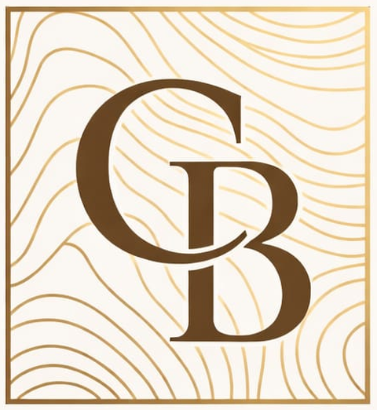
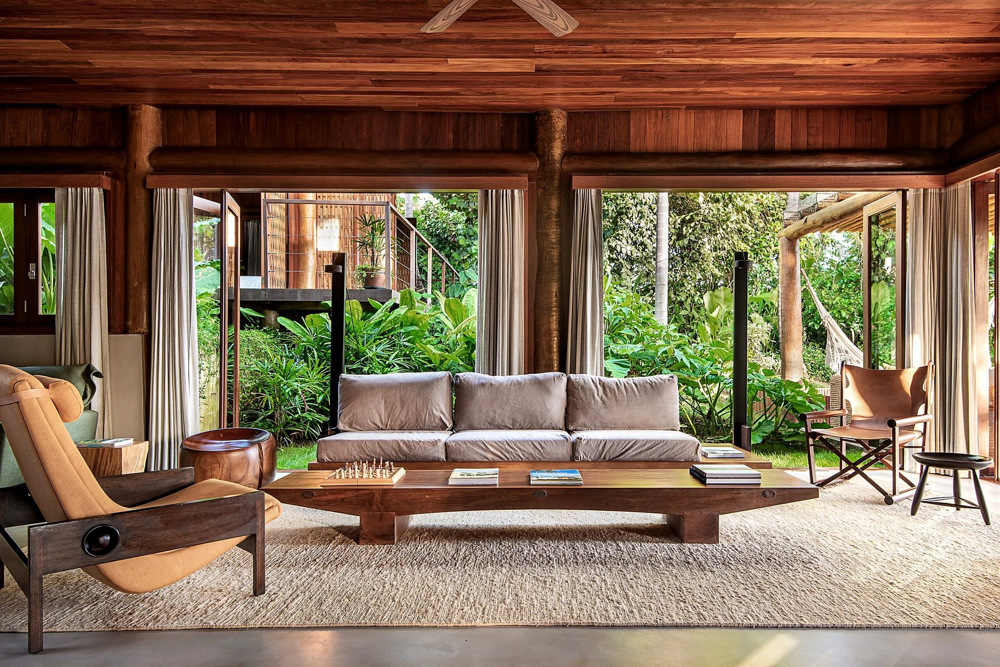
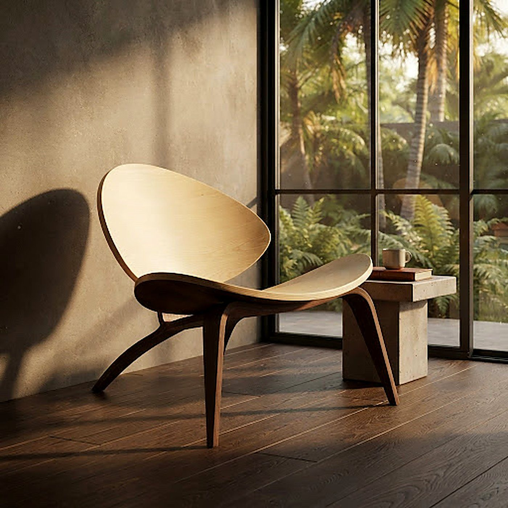
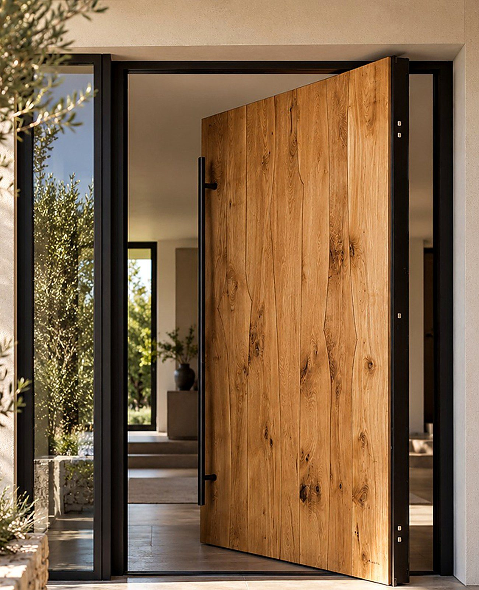
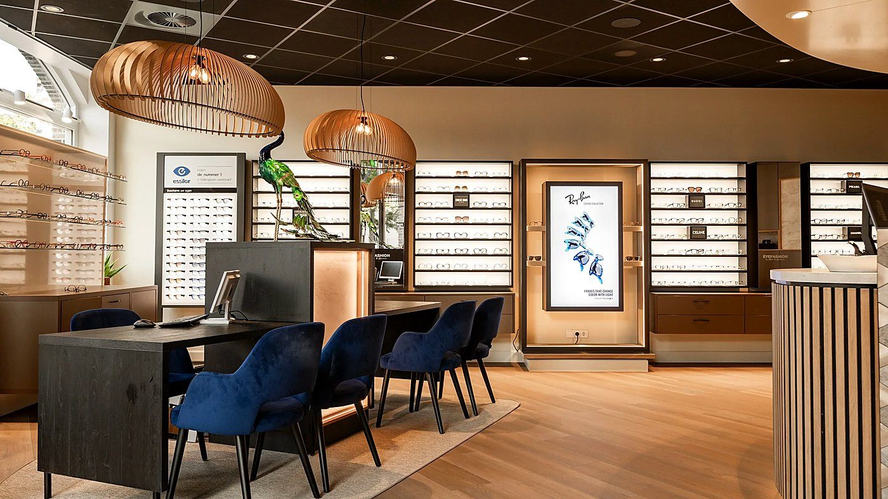
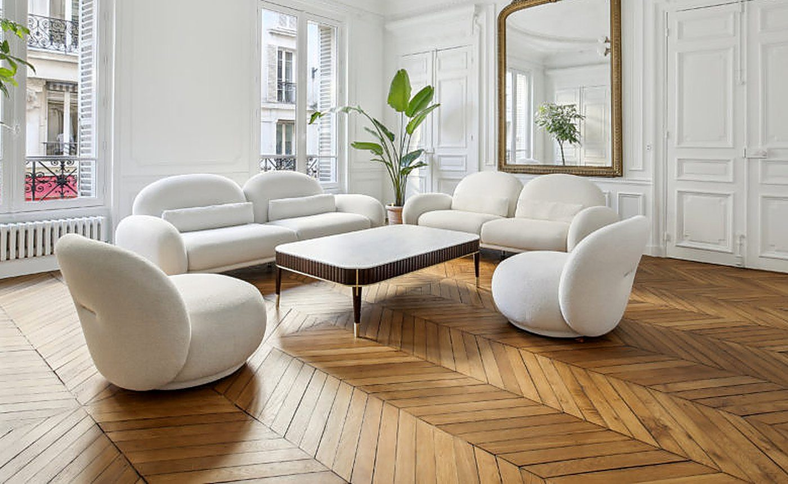
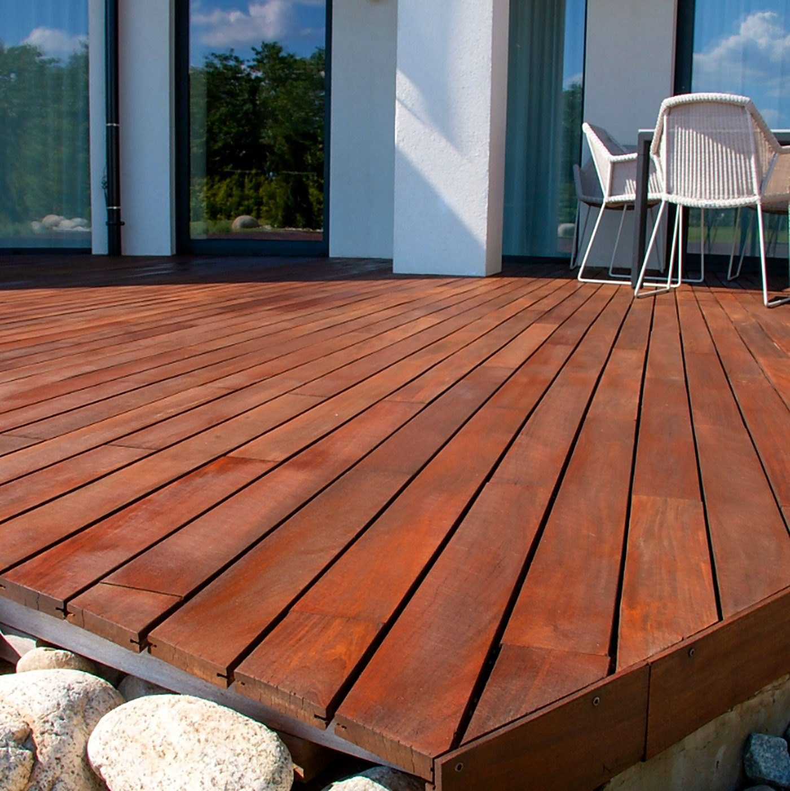
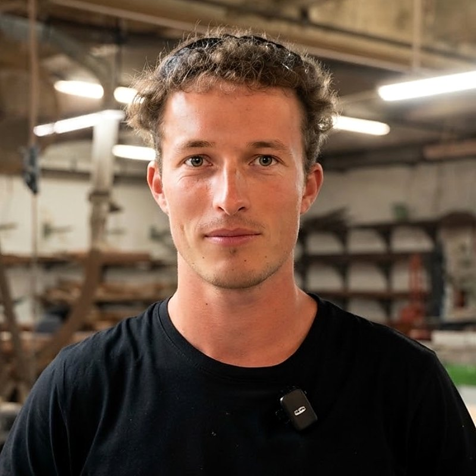

Colisbois
Créer.
Façonner.
Sublimer.
Meubles en bois, portes, agencement, planchers et decks sur mesure, fabriqués dans notre atelier de Macouria : des idées à la réalisation.
Chaque projet est travaillé selon vos besoins, l'espace et les matériaux choisis, avec une attention portée aux détails et aux finitions.
Menuisier et ébéniste basé à Macouria, Colisbois intervient à Cayenne, Rémire-Montjoly, Matoury, Macouria, Montsinéry-Tonnegrande, Roura et Kourou.
Colin y présente son parcours et l'atelier où il travaille : machines, cabine de vernis, espace dédié à la fabrication sur mesure.
Vidéo : La Fabrique du Dégrad.
Voir sur Instagram →
Colisbois réalise tout type de meubles sur mesure, dans l'essence de bois de votre choix : fauteuils, tables, chaises, lits, buffets… Dimensions, finitions et style définis avec vous.
Colisbois réalise tout type de meubles sur mesure, dans l'essence de bois de votre choix : fauteuils, tables, chaises, lits, buffets… Dimensions, finitions et style définis avec vous.
Voir la galerie →
Portes, cloisons, placards, escaliers… des ouvrages de menuiserie conçus selon votre espace et posés avec soin.
Portes, cloisons, placards, escaliers… des ouvrages de menuiserie conçus selon votre espace et posés avec soin.
Voir la galerie →
Aménagement de boutiques et d'intérieurs : comptoirs, rayonnages, habillages muraux, pensés pour votre activité et votre image.
Aménagement de boutiques et d'intérieurs : comptoirs, rayonnages, habillages muraux, pensés pour votre activité et votre image.
Voir la galerie →
Pose et rénovation de planchers et parquets intérieurs, dans l'essence et la finition de votre choix.
Pose et rénovation de planchers et parquets intérieurs, dans l'essence et la finition de votre choix.
Voir la galerie →
Création et reprise de decks et terrasses extérieures, dans un bois adapté au climat de la Guyane.
Création et reprise de decks et terrasses extérieures, dans un bois adapté au climat de la Guyane.
Voir la galerie →Chaque pièce est travaillée à la main, du choix de la planche à la finition.
Chaque essence est choisie selon ses caractéristiques (teinte, dureté, tenue dans le temps, usage). Nous sélectionnons le meilleur bois pour votre projet.
Un dessin et des dimensions adaptés à votre intérieur, validés avec vous avant fabrication.

Formé à l'ébénisterie d'art au Québec, puis à la menuiserie en France, Colin allie la précision du meuble à la rigueur de la pose.
Diplôme en ébénisterie, École nationale du meuble et de l’ébénisterie de Montréal.
CAP menuisier fabricant, Grenoble.
BP menuisier fabricant en alternance, en atelier, en région parisienne.
Remplissez le formulaire de devis en bas de page, appelez-nous ou écrivez-nous sur WhatsApp en décrivant votre projet : usage, dimensions approximatives, essence de bois souhaitée. Nous revenons vers vous pour en discuter.
L'essence dépend de votre projet : teinte, dureté, tenue dans le temps, usage intérieur ou extérieur. Dites-nous ce que vous recherchez, nous vous conseillons la plus adaptée.
Autour de Cayenne et jusqu'à Kourou : Cayenne, Rémire-Montjoly, Matoury, Macouria, Montsinéry-Tonnegrande, Roura et Kourou.
Colisbois réalise des meubles en bois sur mesure (tables, chaises, fauteuils, bibliothèques, rangements), des ouvrages de menuiserie (portes, volets, persiennes, placards), de l'agencement de boutiques et d'intérieurs, des planchers intérieurs et des decks extérieurs.
Oui. Chaque meuble est dessiné avec vous : dimensions, essence de bois, finitions et style, puis fabriqué dans notre atelier de Macouria.
Pour l'extérieur, nous recommandons des essences durables, résistantes à l'humidité, à la chaleur et aux insectes. Nous vous conseillons selon l'exposition, l'usage et le budget.
Oui, Colisbois fabrique et pose : portes, volets, planchers, decks et agencements, selon le projet.
L'atelier est situé au 150, PK12, RN1, 97155 Macouria, en Guyane. Ouvert de 8h à 17h : appelez-nous au +33 6 67 12 63 54 avant de passer.